Onboarding redesign
Review of plans/onboarding-redesign.md (round-5 mockup). Flow B, one question
per screen, over the live H1 map: logo loader → intro → Source · You & heart rate · Bike
· Import. Same steps and data as before. Built on top of the uncommitted training-load
recompute. Everything is in the working tree; nothing is committed.
User-visible changes
C1First-start logo loader (L3)
The public/logo.svg strokes grow bottom to top and retract off the top, staggered by 0.3
s, on a 3.0 s cycle. The loader covers the lazy import and decode of
demoRoutes.json, stays up for at least one full cycle and hands off only at a
cycle boundary (ceil(max(ready, 3000) / 3000) × 3000), so the logo is empty
when it fades out (500 ms). Caption "Loading map data…" / "Kartendaten werden geladen…".
Surface is the new shared overlayClass (see C9).


C2Preview: demo routes draw in on the live map
At hand-off the 14 demo routes draw in as 28 passes (original + a ~22 m jittered copy
each, staggered over 1.8 s, 1.6–2.4 s each, ease-out). Same look as
gps-tracks: running green, cycling orange, faint alpha, additive blend, no
blue (§6). In memory only, not pickable, gone once onboarding completes. The camera fits
the preview clear of the card (desktop) or the dialog / pill (phone).


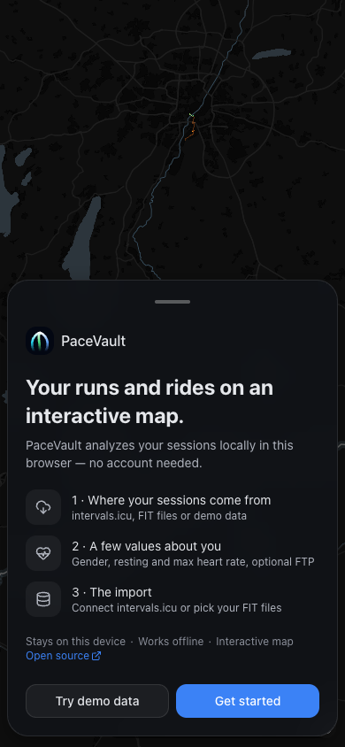
C3Intro with crumbs and the GitHub link
Logo + "PaceVault", the tagline as the question-sized heading, one line on what the app
is, then the three asks as List/ListItem +
IconTile. The crumb line "Stays on this device · Works offline · Interactive
map · Open source ↗" wraps and keeps all four crumbs; no "·" starts a line. "Open source"
opens GITHUB_URL (now exported from Settings → About) in a new tab. CTAs "Try
demo data" (secondary) and "Get started". No "Next" heading, no "add later" helper, no
time estimate.

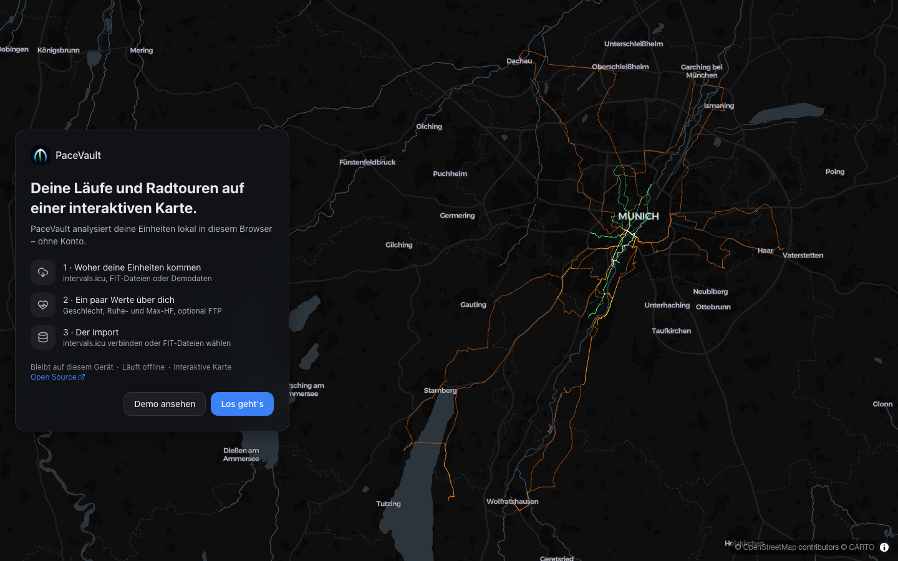

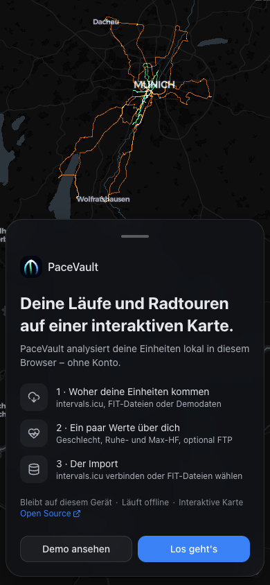
C4Step 1/4: Source
Progress bar + "1/4", the question and subtitle, then three ActionTile rows
(intervals.icu, FIT files, Try demo data) and the crumb line. Continue is disabled until a
pick; "Try demo data" + Continue starts the demo, the others go to step 2. Back returns to
the intro. The intervals.icu caption is shortened to fit the row tile.


C5Step 2/4: You and your heart rate
Gender as two ActionTile rows (Male / Female, nothing preselected, required),
then rest HR and max HR (required, with the hint or the validation error under the field).
Continue needs a gender and both HR values valid.
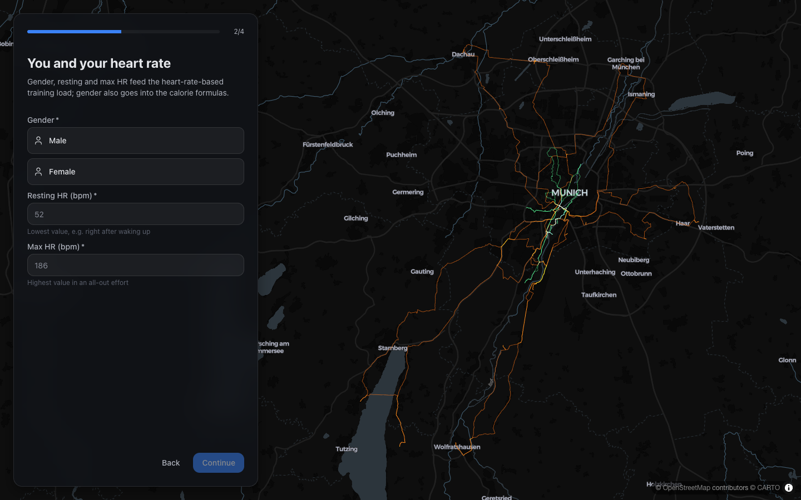
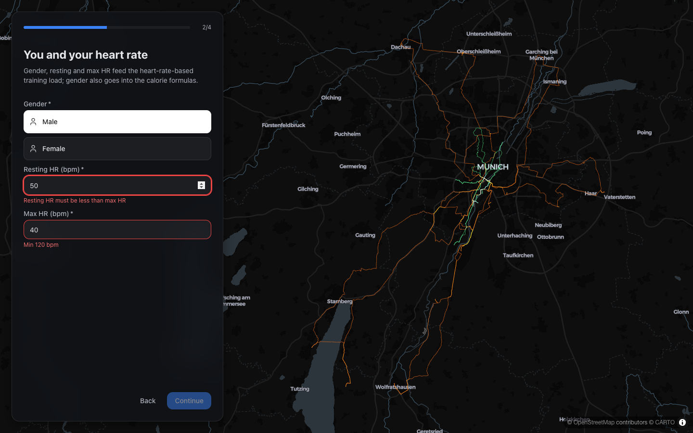
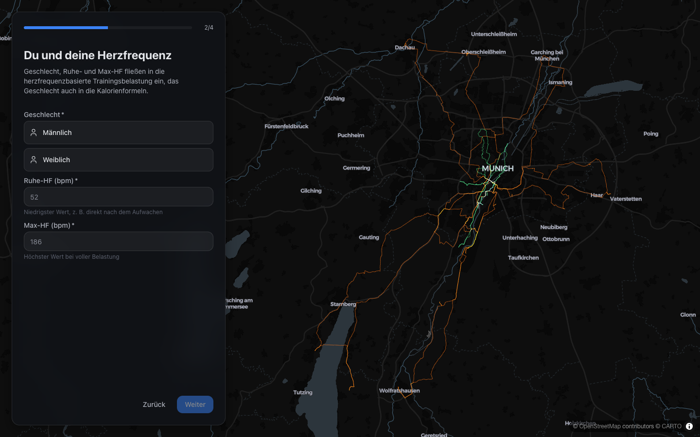

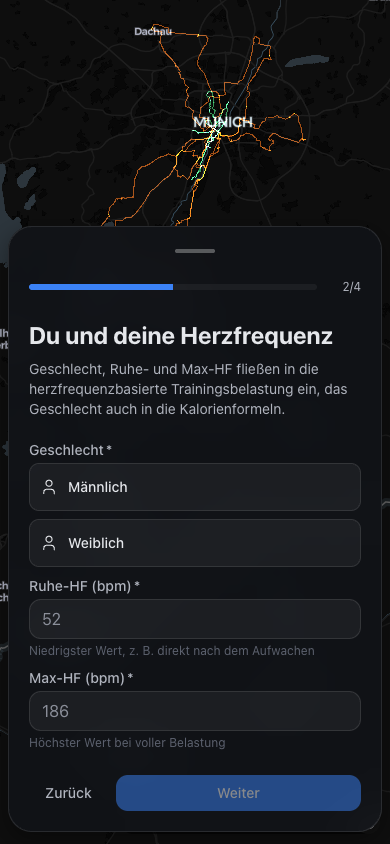
C6Step 3/4: Bike (optional FTP)
FTP with the "You can add this later in Settings" hint. Empty is valid; an out-of-range value blocks Continue. Threshold pace, weight and birth year are not asked (Settings).

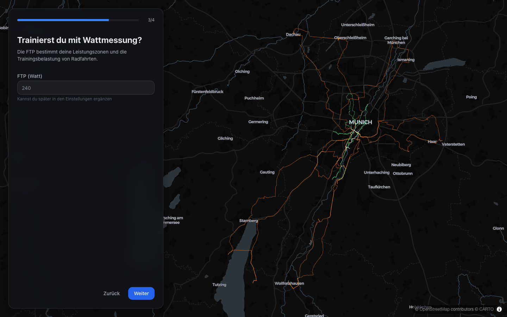
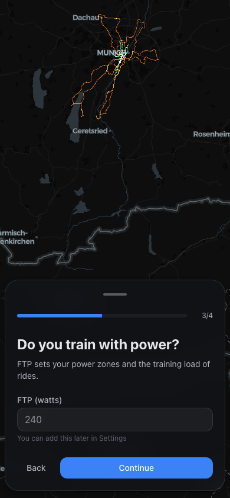

C7Step 4/4: Import (intervals.icu or FIT)
intervals.icu: IntervalsConnectionForm as it is, with the profile gate and
onSynced → completeOnboarding; the form's own "Import sessions" button
imports, so the footer only has Back. FIT: the subtitle is the existing FIT description,
the body is the crumb line, and the footer primary is FitUploadButton. The
profile (incl. FTP) is still written once, at import.


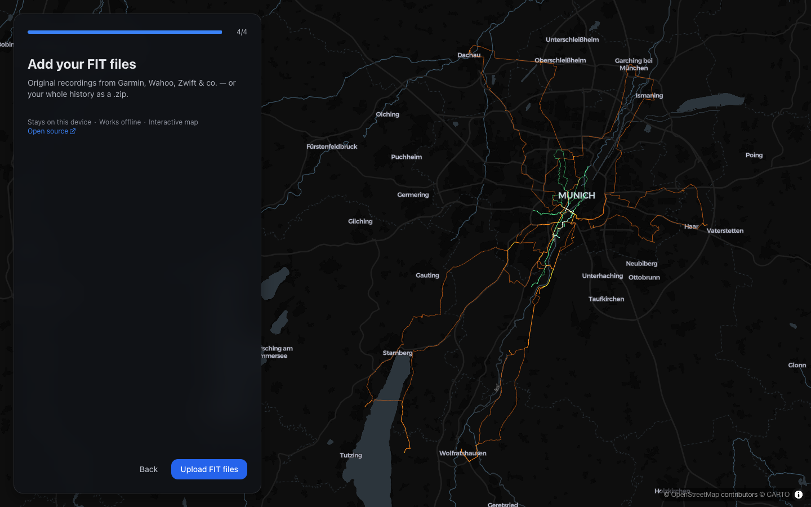
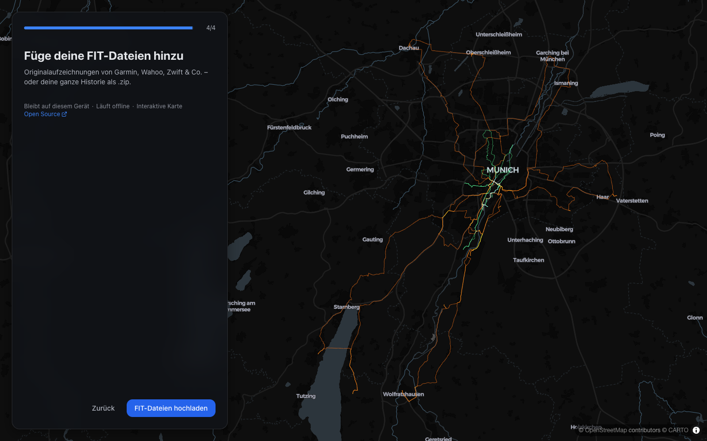

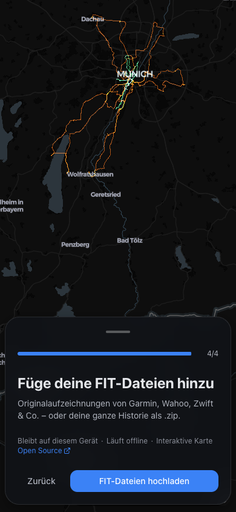
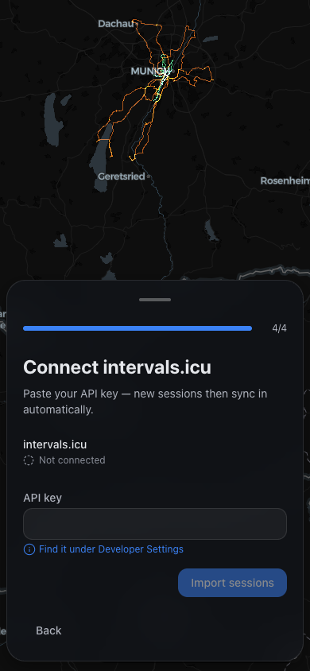
C8Phone: Dialog without a scrim, "Continue setup · n/4" pill
On phone the intro and the steps sit in the existing Dialog (inset floating
card, grabber, drag-to-dismiss) with the new DialogContent scrim={false} and
DialogRoot modal={false}: no overlay, the map pans and zooms underneath, and
map taps never close it. Grabber tap/drag and Escape close it; a
FloatingPill "Continue setup · 2/4" (or "Start setup" on the intro) reopens
the same step with the values kept. The camera refits (900 ms) on close and reopen.


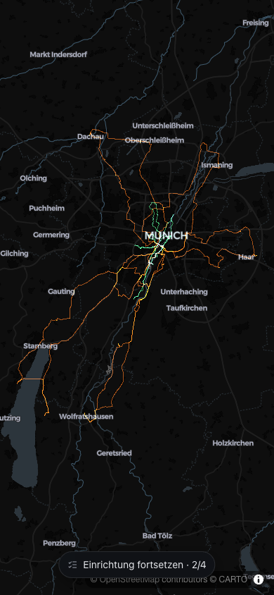
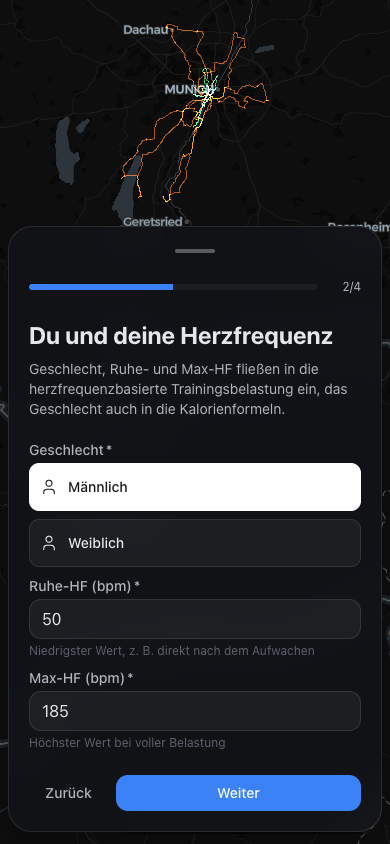
C9Import overlay (unchanged, shared surface)
The full-screen ImportProgressOverlay runs as before, above the desktop card
and the phone dialog. Its surface class is now the shared overlayClass, which
the loader (C1) also uses.
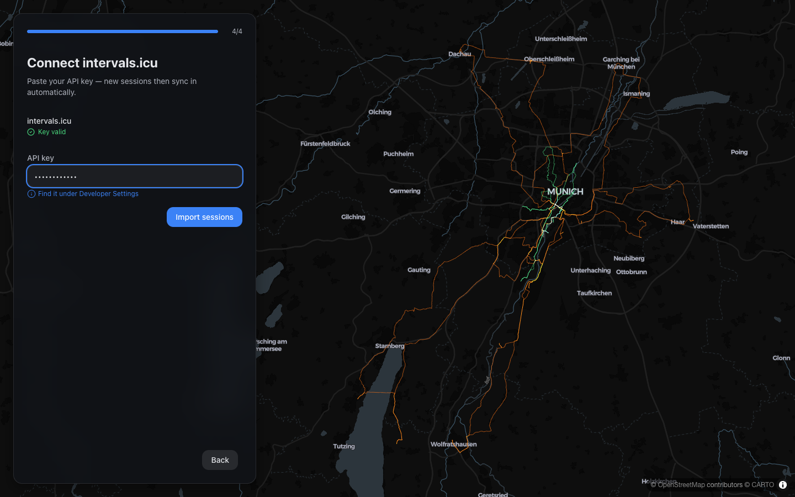


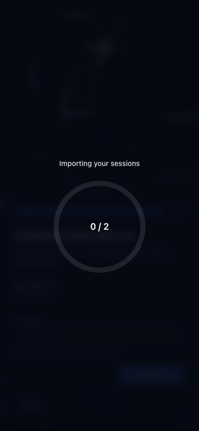
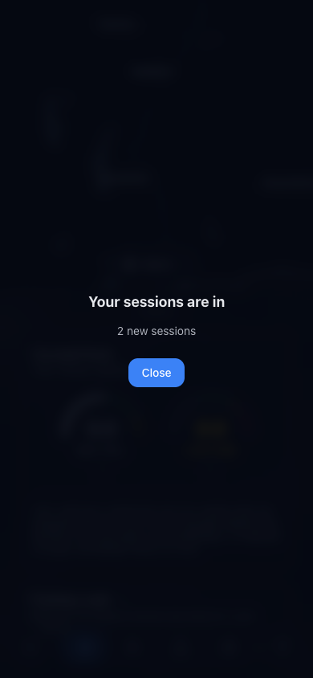
C10Camera fits the imported tracks after import
No new code: closing the summary completes onboarding, the preview layer disappears and the existing first overview fit frames the user's own tracks (here two Karlsruhe sessions from the mocked intervals.icu import). No draw-in of the user's tracks.


C11Binary gender in onboarding and in Settings
Onboarding offers Male / Female with nothing preselected (C5). Settings → Thresholds now
lists only Male / Female; "Other" / "Divers" is gone, and so is the key
ui_thresholds_other.


C12"Try demo data" / "Demo ansehen"
"Test Data" and the "Generate" step are gone. The intro button and the source tile both
read "Try demo data" (DE "Demo ansehen") and start the demo directly; its loading state is
the import overlay. The demo handler is the old handleGenerate, unchanged.
C13intervals.icu status line has a fixed height
The status line under "intervals.icu" sits in an h-8 box (two caption lines),
so "Not connected", "Checking key…", "Key valid" and the long error no longer move the key
field. Applies in Settings too. IntervalsConnectionForm lost its
children slot (only onboarding used it).
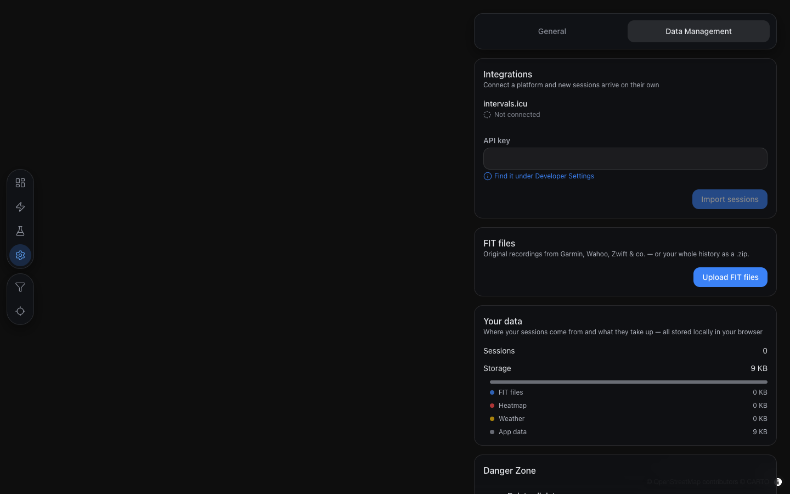
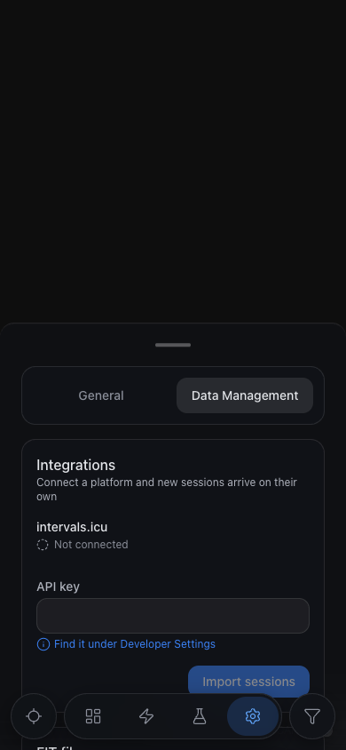
Changes without UI
N1Store useOnboardingStore (not persisted)
step, source, onboardingCardOpen,
onboardingPreviewRevealed with scope-named actions. A reload restarts at the
loader and the intro. revealOnboardingPreview also opens the phone card.
N2Form: gender null until picked,
fieldValid
FormValues.gender is Gender | null; valid requires
a gender; save narrows it before createProfile;
saveChanges skips null; isGender drops
other. New fieldValid(field) for the per-screen gates.
FormValues is no longer exported (last importer removed).
N3Engine: no Keytel estimate without a gender
EnergyBody.gender is optional. The male/female average for
other is gone; without a gender the heart-rate method gives no estimate
(missing is missing, not 0 kcal). moreStats passes
thresholds?.gender without the ?? 'other' fallback. Stress and
training effect needed only the narrower type.
N4Schema: gender: z.enum(['male', 'female']), no
migration
A stored profile with other now rehydrates to null (Zod
fallback, no throw). No version bump, as settled.
N5Removed dead code
OnboardingThresholds and the staged-history helpers; the
ThresholdTiles mode prop and its create branches;
StatTile's required prop (its only user was the create mode);
ActionTile's StackTile and layout prop (row is the
only layout; description became optional for the gender rows);
IntervalsConnectionForm children; message keys
ui_thresholds_other, ui_thresholds_onboarding_note,
ui_onboarding_welcome_*, ui_onboarding_testdata_*.
OnboardingPage is a thin container; AppLayout no longer wraps it
in a max-w-2xl main.
N6E2E helper and specs
New startOnboarding(page, source) and
fillOnboardingProfile(page). Onboarding, ZIP and intervals.icu specs go
through them; "Continue is disabled until gender and valid HR" replaces the upload-gate
test; one new phone test (map drag keeps the card, grabber → pill "Continue setup · 2/4" →
same question with values kept).
N7Unit test for the draw-in
slicePath: empty before start, prefix + interpolated end point mid-pass, full
path at/after the end; buildPreviewPasses is deterministic.
Deviations from the plan
-
Preview camera fit runs at the reveal, not under the loader, and does not wait for the
map's
loadevent. The card and the dialog it pads against only mount at the reveal, so the fit runs one frame after it (duration: 0). Waiting forload(which waits for tiles) made the draw-in play at the default Europe view on a slow basemap; maplibre's camera works beforeload.src/features/map/hooks/useOnboardingPreviewCameraEffect.ts:43-68. ThemapLoadedparameter the plan implied is not used. -
Energy: the heart-rate method is skipped without a gender
(
energy.ts:146), in addition to the per-interval guard the plan named. The guard alone would sum to a 0 kcal estimate, which breaks "0 is data, missing is missing". Blockers (weight/age) still win, so today's UI is unchanged. -
Loader stroke dashes follow the mockup:
stroke-dasharray: 1 2with offsets 1.05 → 0 → −1.05, not1with 1 → 0 → −1. The extra 0.05 hides the round caps when a stroke is empty. -
Intro logo is
<img src="/logo.svg">(32 px), not inline SVG markup. Only the loader inlines the paths (it has to animate them). -
Small additions:
ActionTile.descriptionis optional (gender rows have no caption); source and gender tiles carryrole="radio"+aria-checkedthrough the existingbuttonProps; HR/FTP inputs show the mockup placeholders 52 / 186 / 240; the phone pill carriesdata-layout="onboarding-pill"so the camera can measure it;onboardingProgressOf/ONBOARDING_FLOW_STEPSin the store feed both "n/4" and the pill. -
Demo handler location:
startOnboardingDemolives inOnboardingFlow.tsx(as planned) and reaches the intro and the source step as anonDemoprop, so neither imports the flow (no import cycle). -
Training-load recompute code was not touched. The only shared file is
src/components/ui/ImportProgressOverlay.tsx(one class swap tooverlayClass, line 134).
Open points for your review
-
Phone camera does not refit between steps. As planned it refits only on
close/reopen. The "You" step is taller than the source step, so part of the preview can
sit under the card (compare
p-en-04-sourcevs.p-en-06-you-error). Options: (a) keep; (b) also refit on step change. Recommendation: (a), the map is pannable and the card is dismissible. -
Pill covers the expanded map attribution at 390 px (bottom right, see
p-en-07-pill). Options: keep, or lift the pill above the attribution row. -
Cross-field HR error shows twice. With max HR 40 the existing validation
shows "Min 120 bpm" under max HR and "Resting HR must be less than max HR" under rest HR
(
d-en-06-you-error). This is today'suseThresholdsFormbehaviour, more visible now that both fields sit together. Not changed (scope). - "PaceVault" in the intro is a hard-coded brand string, not a message key.
- Focus is not trapped in the non-modal phone card (known risk in the plan); Tab can leave it.
-
Demo banner still says "test data" / "Testdaten"
(
ui_demo_banner_text), as the plan noted. Follow-up, out of scope. -
E2E flakes under parallel load: in the first full run
e2e/mobile/map.spec.ts:480(known) and:281failed; both passed with--workers 1, and the second full run passed 83/83.:281is the same WebGL-picking class as:480.
Verification
| Command | Result |
|---|---|
vp build (first) |
pass |
vp check |
pass (fmt, lint, types; 556 files) |
vp test -- --run |
pass, 131 files / 1304 tests |
vp exec playwright test |
pass, 83/83 (second full run). First run: 81 passed,
mobile/map.spec.ts:281 and :480 failed and passed with
--workers 1
|
vp build (final) |
pass |
How to check it yourself
- Clear site data and open the app: the logo grows and retracts for at least 3 s; with CPU throttling a second cycle finishes before the hand-off, and the logo is empty when it fades.
- The routes draw in (green runs, orange rides, no blue), framed clear of the card (desktop) or the dialog (phone). Pan and zoom work; track hover/click does nothing.
- Intro: the crumb line wraps without a leading "·" (DE at 390 px); "Open source" opens GitHub in a new tab.
- Get started → each step shows "n/4"; Back works on every step; Continue on step 1 needs a pick, on step 2 a gender and both HR values.
- intervals.icu path: source → you → bike → key → import → the camera fits your tracks. FIT path: the same, then Upload FIT files.
- Demo from the intro and from the source tile: the import overlay runs, then the demo banner shows.
- Phone: drag the map with the card open (it stays); tap or drag the grabber (pill "Continue setup · n/4"); tap the pill (same step, values kept, camera refits); Escape closes it.
- Settings → Thresholds: gender offers only Male / Female. Settings → Data: typing a key doesn't move the key field.